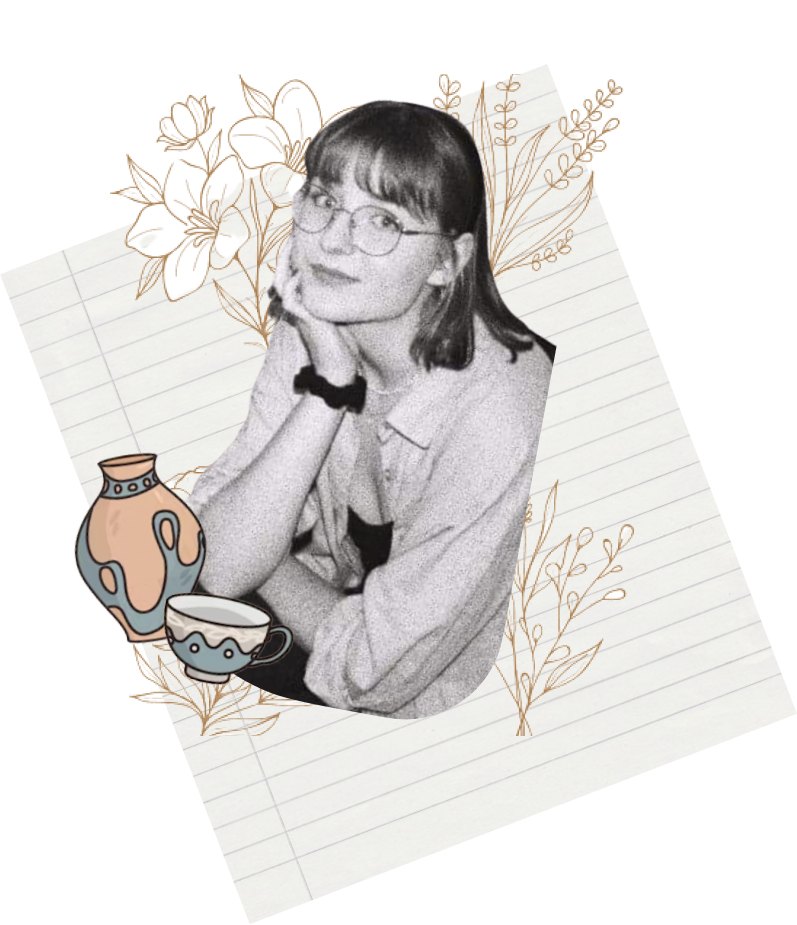
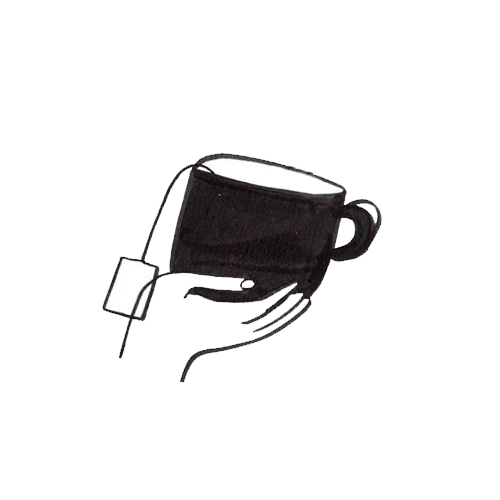
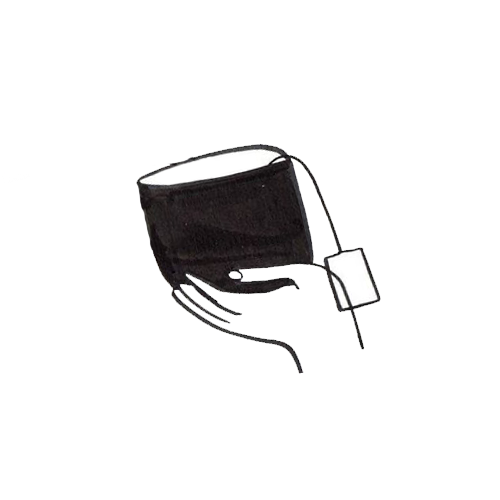

My Story
My Work
Contact

Hi. Hello.
I am Zofia Bekisz
Welcome to my pottery portfolio! Feel free to browse through my artwork, and don't hesitate to reach out if you'd like to connect :)
Contact Me
 